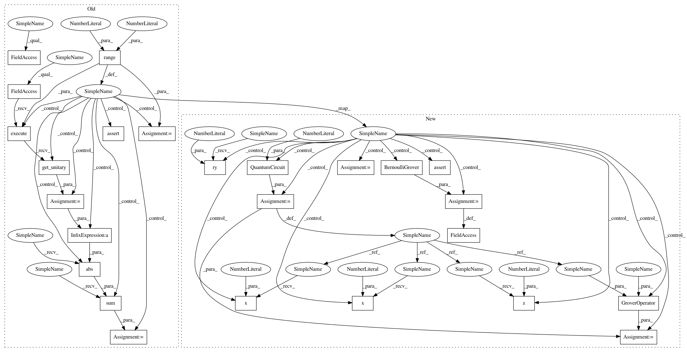

e44bb209a41d9f85a0f115b21b3b150bff65ee66,test/aqua/test_amplitude_estimation.py,TestBernoulli,test_qae_circuit,#TestBernoulli#Any#,192
Before Change
prob = 0.5
for m in range(2, 7):
qae = AmplitudeEstimation(m, a_factory=BernoulliAFactory(prob))
angle = 2 * np.arcsin(np.sqrt(prob))
// manually set up the inefficient AE circuit
q_ancilla = QuantumRegister(m, "a")
q_objective = QuantumRegister(1, "q")
circuit = QuantumCircuit(q_ancilla, q_objective)
// initial Hadamard gates
for i in range(m):
circuit.h(q_ancilla[i])
// A operator
circuit.ry(angle, q_objective)
if efficient_circuit:
qae.q_factory = BernoulliQFactory(qae.a_factory)
for power in range(m):
circuit.cry(2 * 2 ** power * angle, q_ancilla[power], q_objective[0])
else:
q_factory = QFactory(qae.a_factory, i_objective=0)
for power in range(m):
for _ in range(2**power):
q_factory.build_controlled(circuit, q_objective, q_ancilla[power])
// fourier transform
iqft = QFT(m, do_swaps=False).inverse()
circuit.append(iqft.to_instruction(), q_ancilla)
expected_unitary = self._unitary.execute(circuit).get_unitary()
actual_circuit = qae.construct_circuit(measurement=False)
actual_unitary = self._unitary.execute(actual_circuit).get_unitary()
diff = np.sum(np.abs(actual_unitary - expected_unitary))
self.assertAlmostEqual(diff, 0)
@data(True, False)
def test_iqae_circuits(self, efficient_circuit):
Test circuits resulting from iterative amplitude estimation.
After Change
// manually set up the inefficient AE circuit
qr_eval = QuantumRegister(m, "a")
qr_objective = QuantumRegister(1, "q")
circuit = QuantumCircuit(qr_eval, qr_objective)
// initial Hadamard gates
for i in range(m):
circuit.h(qr_eval[i])
// A operator
circuit.ry(angle, qr_objective)
if efficient_circuit:
qae.grover_operator = BernoulliGrover(prob)
for power in range(m):
circuit.cry(2 * 2 ** power * angle, qr_eval[power], qr_objective[0])
else:
oracle = QuantumCircuit(1)
oracle.x(0)
oracle.z(0)
oracle.x(0)
state_preparation = QuantumCircuit(1)
state_preparation.ry(angle, 0)
grover_op = GroverOperator(oracle, state_preparation)
for power in range(m):
circuit.compose(grover_op.power(2 ** power).control(),
qubits=[qr_eval[power], qr_objective[0]],
inplace=True)
// fourier transform
iqft = QFT(m, do_swaps=False).inverse()
circuit.append(iqft.to_instruction(), qr_eval)
actual_circuit = qae.construct_circuit(measurement=False)
self.assertEqual(Operator(circuit), Operator(actual_circuit))
@data(True, False)
def test_iqae_circuits(self, efficient_circuit):
Test circuits resulting from iterative amplitude estimation.
In pattern: SUPERPATTERN
Frequency: 3
Non-data size: 25
Instances
Project Name: Qiskit/qiskit-aqua
Commit Name: e44bb209a41d9f85a0f115b21b3b150bff65ee66
Time: 2020-09-15
Author: jules.gacon@googlemail.com
File Name: test/aqua/test_amplitude_estimation.py
Class Name: TestBernoulli
Method Name: test_qae_circuit
Project Name: Qiskit/qiskit-aqua
Commit Name: e44bb209a41d9f85a0f115b21b3b150bff65ee66
Time: 2020-09-15
Author: jules.gacon@googlemail.com
File Name: test/aqua/test_amplitude_estimation.py
Class Name: TestBernoulli
Method Name: test_qae_circuit
Project Name: Qiskit/qiskit-aqua
Commit Name: e44bb209a41d9f85a0f115b21b3b150bff65ee66
Time: 2020-09-15
Author: jules.gacon@googlemail.com
File Name: test/aqua/test_amplitude_estimation.py
Class Name: TestBernoulli
Method Name: test_mlae_circuits
Project Name: Qiskit/qiskit-aqua
Commit Name: e44bb209a41d9f85a0f115b21b3b150bff65ee66
Time: 2020-09-15
Author: jules.gacon@googlemail.com
File Name: test/aqua/test_amplitude_estimation.py
Class Name: TestBernoulli
Method Name: test_iqae_circuits